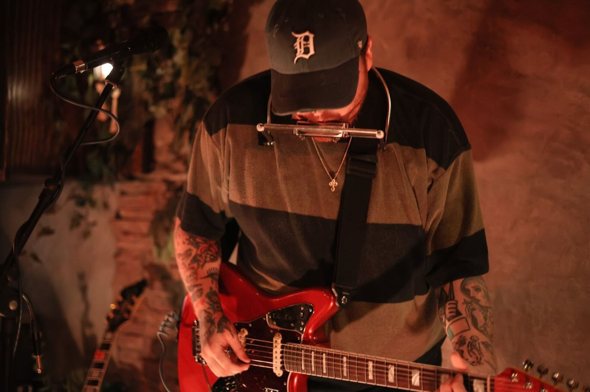
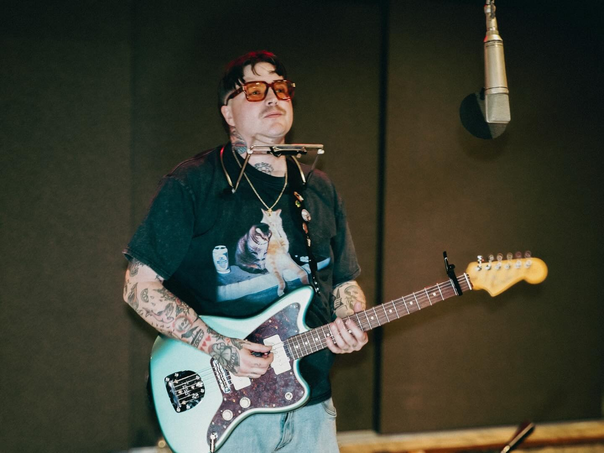
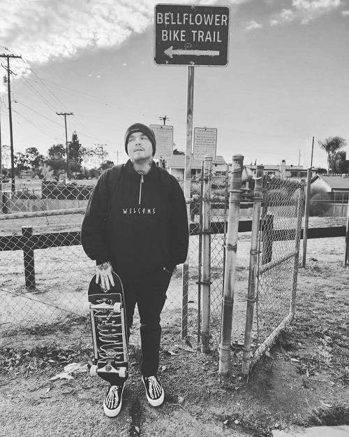

press kit updated November 2026 · preview
tyler allred
in one line
Singer-songwriter. Michigan, then Los Angeles.
bio
Tyler Allred started writing songs in elementary school and picked up a guitar at twelve or thirteen. He came up in Michigan and later relocated to Los Angeles, where he met the people who helped him start getting his songs out.
His 2024 EP, 33 Days & a Wake Up, shows where his sound is now. In the words of his own notes it is “bold but can be delicate”: a record that puts him out there with no walls built around him. It was recorded at Sunset Sound in Los Angeles. He is working on a new album.
the song
Anxious Anyway
The song came from a dream. Tyler was recording the EP, stuck in writer's block and one song short, when he woke up one morning with the opening line in his head. He picked up his guitar and the song came together.
He says he is not great at assigning meaning to his own songs. His best guess is that this one is about anxiety, O.C.D. and having someone who can level him out.
releases
- 202433 Days & a Wake Up EP, four songs: Kind of Nervous (Seen This Trick Before), Expectations, It Might Be Fun, Anxious Anyway. Cover art by Spencer Robens.
- 2024Anxious Anyway single
- 2023It Might Be Fun single
- 2023Do or Die single
- 2021Easy single
- 2021Often single
- 2020Get Well Soon single
- 2019Everything Is Fine EP, four songs
press
- 2026The Sounds Won’t Stop interview and review
- 2024BuzzMusic interview, and a write-up of the Anxious Anyway video: “it portrays those anxious thoughts he sings of perfectly”
photos
-

Photo: Tales of Camera and Pen
download the live photo -

Photo: Tales of Camera and Pen
download the studio photo -

From Tyler’s press kit
download the bike trail photo


listen & follow
- Spotify (opens in a new tab)
- Apple Music (opens in a new tab)
- YouTube (opens in a new tab)
- Instagram (opens in a new tab)
open.spotify.com/artist/2QXPR6XeduBU3eRzJZH6ht · instagram.com/tylerallredmusic · linktr.ee/TylerAllredMusic
contact
Press, booking and interviews. Tyler is available for interviews on request.